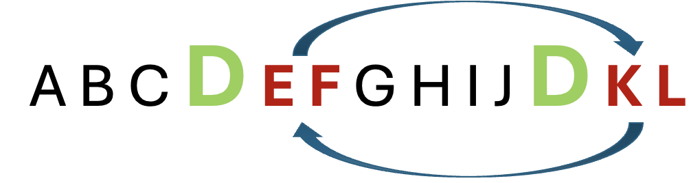
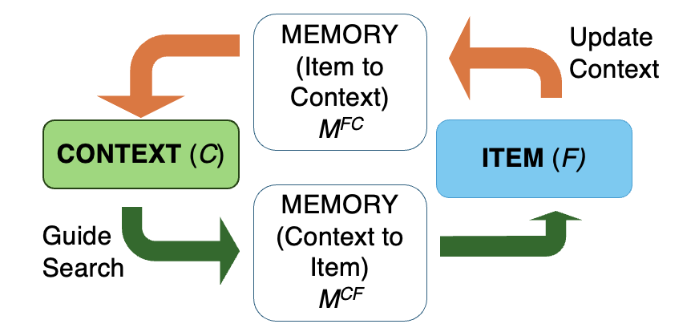
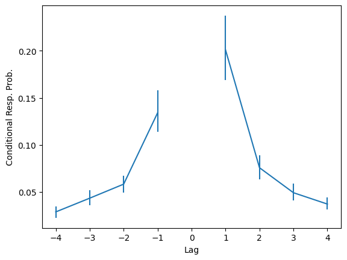
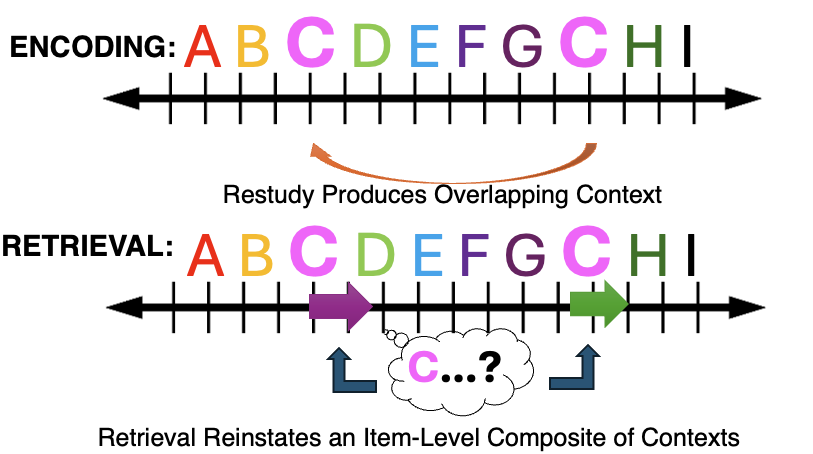
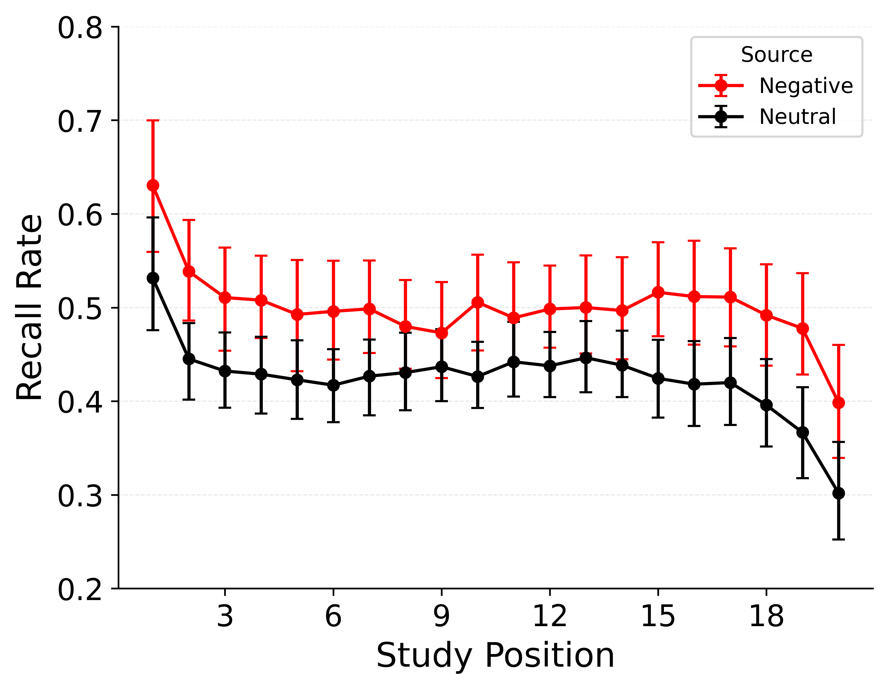
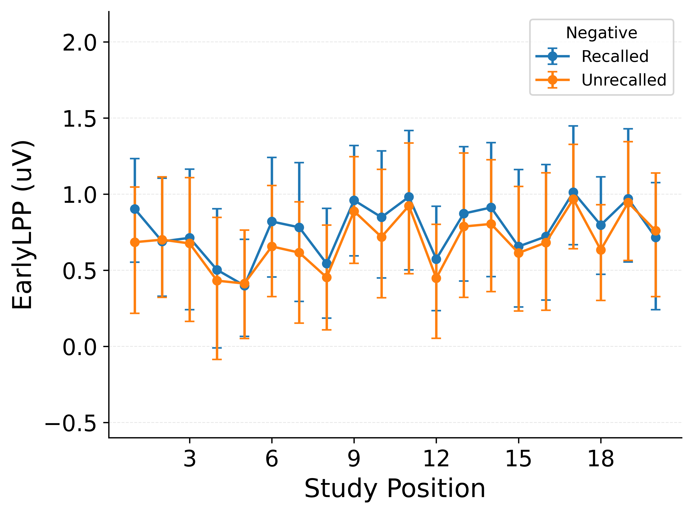
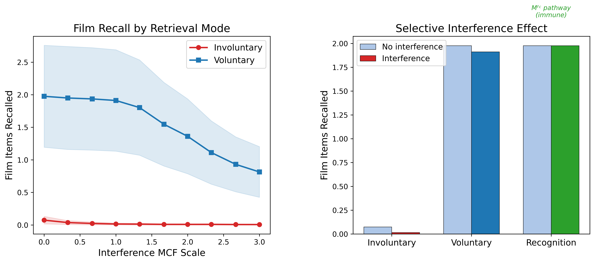

From Theory Refinement to Clinical Application and Neural Grounding
University of Cambridge
Your first visit: cinnamon, fresh loaf, quiet counter
Your visit a week later: espresso, new cashier, different loaf
Episodic memory faces two competing demands:

Item D appears twice — in serial recall, each occurrence must be followed by its correct neighbor


After recalling any item, people disproportionately recall nearby items — the contiguity effect

The theory predicts all associated contexts are reinstated — serial recall with repetitions should be especially challenging

Negative emotional items are consistently better remembered (~50% vs ~40%)

For negative items: higher EEG during study predicts later recall
Model captures this via an emotion x encoding-strength interaction
After reminders of a distressing experience, playing Tetris reduces involuntary intrusive memories
. . .
But voluntary recall and recognition are largely spared
. . .
No existing account formally explains why

Reminders reinstate distressing context — Tetris creates competing memories that interfere with later intrusions
By simulating this in a formal model, we can test how well it matches the data and devise stronger interventions
. . .
Memory models advance science — and a key part of what our lab is all about